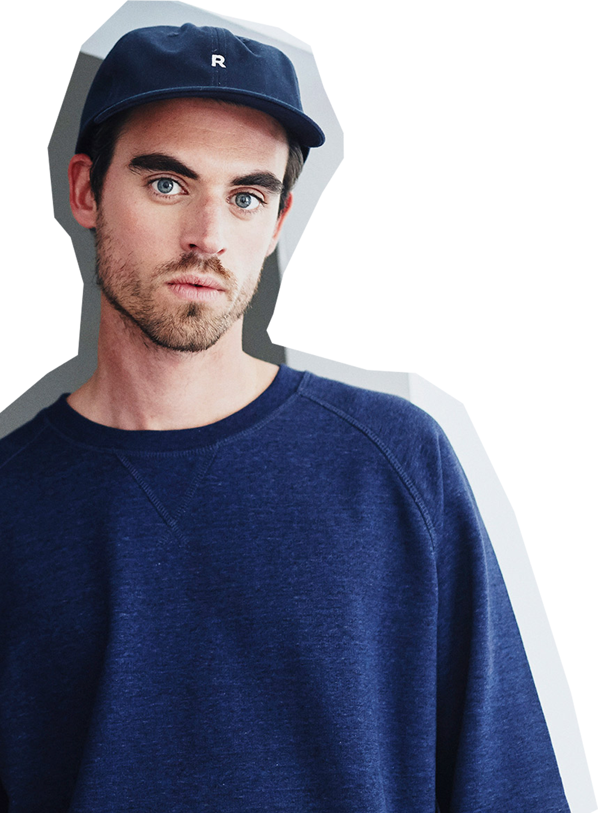
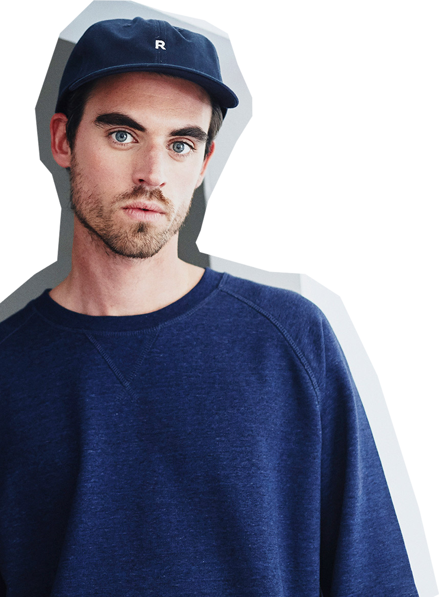

베를린은 독일의 수도이다.
2014년 12월 현재
인구 3,562,166명으로,
독일 내 단일 규모로는
최대의 도시이다.
독일 북동부 슈프레강과
하펠강 연안에 있다.
도시 전체가
브란덴부르크주에
둘러싸여 있으며
베를린 자체도 연방주이다.


슈프레강
서울에 한강이 있다면 베를린엔 슈프레강(Spree Fluss)이 있다. 슈프레강은 베를린 중심부를 남동쪽에서 북서쪽으로 가로지른다. 슈프레강을 제대로 즐기고 싶다면 자전거를 타야 한다.
베를린 국제 맥주 축제
3일간의 축제기간 동안 약 2.2km에 달하는 거리에 빼곡하게 맥주 판매대가 들어선다. 여기서 판매되는 맥주의 종류는 무려 2,400종. 베를린 맥주, 독일 맥주, 그 외에 전세계의 맥주를 볼 수 있다. 전통적인 느낌의 옥토버페스트와 다른, 현대적이고 글로벌한 맥주 축제이다.


트렙토어파크&플랜터발트
트렙토어파크역에서 내려 슈프레강을 따라 펼쳐진 녹지를 걷다보면 한없이 평화로운 풍경이 펼쳐진다. 사람들은 푸른 잔디 위에 누워 여유로운 오후를 만끽하고 카약이나 보트에 몸을 싣고 슈프레강을 유영한다. 장미 정원과 ‘청년들의 섬’을 지나면 플랜터발트의 우거진 녹음 속으로 들어서게 된다.
바이센제
‘백색 호수’라는 이름을 지녀 맑고 투명한 물빛을 상상했지만, 그렇진 않다. 바이센제는 자전거로, 트램으로 베를린 도심에서 가장 빨리 닿을 수 있는 호수라 뜨거운 햇살이 내리쬐는 날이면 주저없이 떠날 수 있는 곳이다. 그런 만큼 베를린과 근교에 위치한 호수 중 가장 북적이는 곳이기도 하다.


 





베를린 패션 위크
베를린 패션 위크(Berliner Modewoche)은 독일의 베를린에서 1년에 2번 1월과 7월에 열리고, 2007년 7월에 설립된 이후 국제적으로 많은 관심을 받아왔다.
Voo Store
유럽에서 가장 트랜디하고 핫하다는 베를린을 느껴보는 여러가지 방법 중에 미테지역과 크로이츠벡 지역의 유명한 편집샾들을 다녀보는것도 좋은 방법이다. Voo Store는 우리나라에서도 아주 트랜디한 젊은이들 사이에서도 유명한 베를린의 편집샾이다.


VEGUN
채식주의자를 뜻하는 ‘비건’은 독일의 중요한 문화적 키워드다. 독일은 비거니즘 트렌드의 중심지이자 비건 산업의 선두 국가로 꼽히고 특히 독일 베를린의 쉬벨바이너 거리는 젊은 층 사이에서 ‘비건 거리’로 통한다. 유럽 최초의 비건 식품 전문 유통업체 ‘비건즈(veganz)’가 2011년 이곳에 첫 매장을 열었고, 비건을 위한 아이스크림 가게, 서점, 옷 가게, 애완견 사료 가게도 있다.